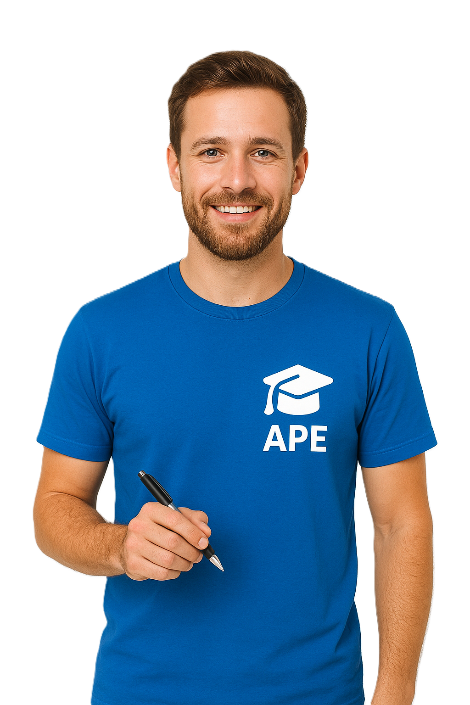
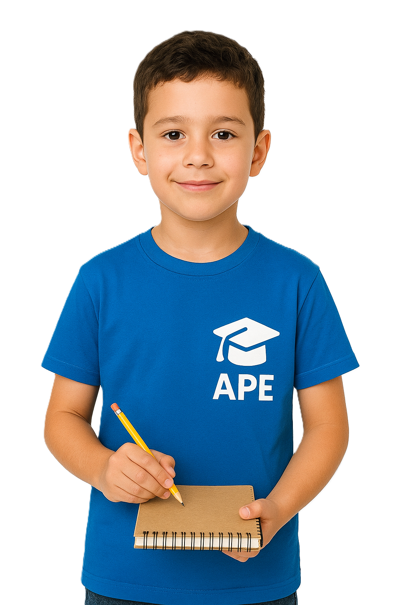

O APE é uma plataforma social criada para conectar estudantes que precisam de apoio escolar com voluntários apaixonados por ensinar.
Nosso objetivo é democratizar o acesso à educação e reduzir desigualdades através da colaboração.
Ajude estudantes em Matemática, Português, Ciências, História e diversas outras áreas.
Quero Ser Voluntário

Encontre voluntários preparados para ajudar você em suas dificuldades escolares.
Quero Me Cadastrar“Ser voluntária no APE mudou minha forma de enxergar a educação. É incrível acompanhar o crescimento dos alunos.”
“Melhorei minhas notas e ganhei confiança nos estudos. Os voluntários realmente fazem diferença.”
“Ensinar no APE é uma experiência transformadora. A plataforma conecta pessoas incríveis.”
Crie sua conta gratuitamente.
Encontramos perfis compatíveis.
Aprenda online com suporte voluntário.
Acompanhamos seu progresso.
Leitura, interpretação e redação.
Exercícios e reforço escolar.
Aprendizado prático e intuitivo.
Entenda o mundo e a sociedade.